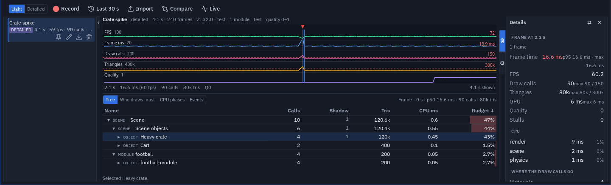
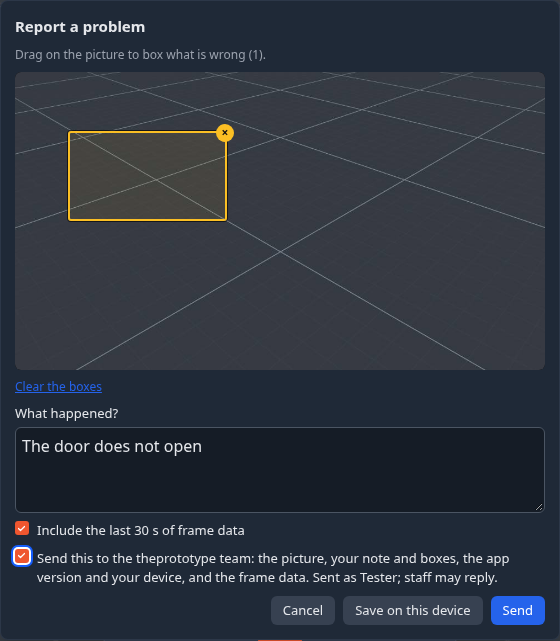

Profiler & performance recordings
The Statistics window tells you where a scene stands right now. The Profiler tells you what happened: it records frame time, draw calls, triangles and the quality level over time, and — in a detailed recording — which objects, materials and shadow casters the draws went to. Everything is measured on the device it runs on, so a recording made in a headset is a recording of the headset.
Recordings are local. They are kept in this browser, nothing replicates to your peers, and nothing leaves the device unless you export a file, turn on Send performance reports or send a problem report.
Opening the Profiler
The Profiler is a tab in the bottom dock, next to the Explorer: press ＋ in the dock's tab strip and choose Profiler. Like the other dock views, the dock's Undock button takes it out as a floating window and the window's Dock puts it back.
Recording
Pick a mode, then press Record; Stop ends it and the recording joins the list.
| Mode | What it records | Cost |
|---|---|---|
| Light | Frame time, draw calls, triangles and the quality level for every frame, plus the markers below. | Next to nothing — the app keeps a light recording running all the time anyway. |
| Detailed | Everything Light records, plus once a second a capture: which objects, meshes and materials the draw calls went to, which were shadow-map passes, CPU time per phase (input, physics, modules, flow, render, other) and memory. | It costs frame time, so the numbers you read are a little worse than the scene really is. Runs for 5 s, 10 s, 30 s or until stopped. |
While a detailed recording runs, Capture takes one extra per-object capture right now.
Last 30 s saves what the app has already recorded: a light recorder is always on and keeps about the last 30 seconds, so when something stutters you can save it after the fact instead of trying to make it happen again.
GPU time
Detailed captures include GPU milliseconds only where the browser offers the
EXT_disjoint_timer_query_webgl2 extension. Most mobile and headset browsers do not, and
then the GPU column is simply absent.
Markers
Every recording — including the always-on one — carries markers for what was going on: scene loads, teleports, grabs, menus, quality changes from the quality governor, entering and leaving VR, and every stall over 100 ms together with what the app was doing at the time. They appear on the timeline and in the Events list.
The recordings list
Each recording keeps the build, the modules and their versions, the device, the scene and game, and whether it was made in VR. Rename it, pin it, export it, or delete it. Up to 40 unpinned recordings are kept; past that the oldest unpinned ones make room for new ones, so pin the ones you want to keep.
Reading a recording
The timeline
Five graphs share one time axis: fps, frame ms, draw calls, triangles and the quality level. The Quest budget is drawn as a red dashed line in each graph that has one — 72 fps, 13.9 ms, 150 draw calls and 300k triangles — and any column past it turns red, so the moments you crossed the budget stand out.
| Do | To |
|---|---|
| Click | select one frame |
| Drag | select a range |
| Wheel | zoom about the pointer |
| Shift+wheel, or a middle-button drag | pan |
| Double-click, or 0 | fit the whole recording |
| ← / → | step one frame (Ctrl for ten) |
| Shift+← / → | extend the range by one frame |
| Home / End | first / last frame |
| + / − | zoom in / out |
| Z | zoom to the selection |
| Esc | select the whole recording again |
A selection counts exactly the frames you picked — the range's frame count is what you selected. (Before 1.35, on a busy machine a selection could take in the neighbouring frame and read 5 frames for four.)
What the selection cost
Below the timeline, the selected frame or range is broken down four ways:
- Tree — scene → module or game → object → mesh and material, with draw calls, triangles and milliseconds on every row; click a column header to sort by it. The editor's own gizmo and helpers are listed last as Editor (not in Play): they cost while you edit, not in the game.
- Who draws most — objects, materials, shadow casters and transparent surfaces, ranked by their share of the budget.
- CPU phases — the mean time per frame of each phase.
- Events — the markers inside the selection.
Tree, Who draws most and CPU phases need a Detailed recording; a light one counts the whole frame only, and says so. When no capture falls inside your selection, the nearest one is shown and labelled as such.
Click a row (in the Tree or Who draws most) to pick that object: its numbers fill the Details sidebar, and it is selected in the scene with its settings open — straight to its LOD section when it has a LOD group, which is often the fix. Switch off ⚙ Settings ▸ Select picked objects in the scene and a row only fills Details.
Triangles are what was drawn
A capture counts the triangles that were actually drawn, after automatic levels of detail swapped in a lighter version. A far-away model can show far fewer triangles than it holds; hover the number to see both.
Details and Settings
Since 1.32 the Profiler has a sidebar on each side. The left one lists the recordings; it hides and comes back with its edge button, like the Explorer's. The right one has two tabs:
- ⓘ Details — what the selection cost. With nothing selected it is the whole recording, after a click on the graph that one frame, after a drag the range: frame time (p50 / p95 / max), FPS, draw calls and triangles against the Quest budget (150 / 300k), GPU time when the device measures it, the quality level, stalls and the heaviest CPU phases. From a Detailed recording it also shows how many materials were drawn, what each module or game cost, and the picked object — its draw calls, triangles, meshes, materials and CPU time.
- ⚙ Settings — Timeline graphs (FPS, Frame ms, Draw calls, Triangles, Quality; one always stays), Quest budget lines, Follow a live stream, Select picked objects in the scene (on by default) and FPS and draw calls overlay (the same switch as Settings ▸ Interface).
The splitter between the graph and the list resizes them: drag it, or focus it and use the arrow keys; double-click resets it. On a very wide screen the graph and the list sit side by side and the bar resizes the columns. The sidebars, the tab and the split are remembered on this device.

On a phone the Profiler opens with both sidebars hidden, so the graph gets the screen.
Compare
Compare puts two recordings side by side: choose one as A (the baseline) and one as B. The headline numbers come first, then the differences by module or game and by object, biggest change first, and the CPU phases when both recordings have them. Per-object differences need two Detailed recordings. Use it for before/after: record, change something, record again.
Export and import
Export writes a recording as a .tpprof file. Import — or dropping files on the panel —
opens .tpprof files, several at once, including the exports the operators' performance-reports
script writes from sent reports. An imported recording is an
ordinary recording from then on: rename it, pin it, compare it.
Report a problem
When something is wrong, Menu ▸ Report a problem sends it to the theprototype team with a picture of what you saw. In a headset it is the radial menu's Tools ▸ Profile ▸ Report a problem.
On a desktop or the Quest browser the picture is taken the moment you press it. Then:
- Drag on the picture to box what is wrong (× removes a box).
- Say what happened.
- Choose whether to include the last 30 s of frame data.
- Tick Send this to the theprototype team and press Send — or press Save on this device instead, and it lands in the Profiler's recordings.

In a headset the VR keyboard asks what is wrong — say where on the screen. When you are signed in, its title says that Enter sends it.
What is sent: the picture, your note and boxes, the app version and your device (and the frame data, if ticked), with your account so the team can reply. Nothing is sent without the box ticked, and sending needs you to be signed in (profile menu, top right).
Report this moment
When something feels wrong — a hitch, a corner of a level where the frame rate drops, something drawn wrongly — one press keeps the evidence:
- On the desktop: Menu ▸ Report this moment. A small dialog shows a picture of what the viewport showed, the last few seconds' numbers (frames, median fps, stalls) and an optional What happened? note. Save keeps it as a recording. When performance reports are available in this build, a box offers to send it as well (Save and send).
- In a headset: the radial menu's Tools ▸ Profile ▸ Report moment captures the moment the same way, with an optional note.
The data and the picture are of the moment you pressed, not of the time spent typing. You get the last 30 seconds of light data, what your eye saw and your note, saved as a recording the Profiler opens. It is sent only when you tick the box, or when Send performance reports is on.
Profiling the headset from the desktop
A headset is where the budget matters and where the Profiler is hardest to read, so you can record it there and read it on a desktop.
Recording in the headset
The radial menu's Tools ▸ Profile holds Record and Record detailed (Stop recording while one runs) and Report moment. While a recording runs, a small pill sits in your view:
- ● REC 0:12 — a light recording,
- ● REC DETAILED 0:04 — a detailed one (it costs frame time, so it says so),
- ◉ LIVE 1 — someone is watching this headset live from a desktop (see below).
A recording made in the headset is saved in the headset's browser; export it from there, or use the live view below to keep a copy on the desktop.
Watching a headset live
On the desktop, the Live button in the Profiler tab's header (beside Import and Compare) opens the Live profiler. It lists the other peers in your room — the same scene as you; a peer in another room is not offered. Press Watch and that peer's frame time, draw calls, triangles and quality level stream to you twice a second, drawn against the Quest budget lines. A light stream is small (about 2 KB a second).
- Detailed asks the headset for a 10-second detailed recording: CPU phases and per-object captures. That costs the headset frame time; the recording is saved on the headset too, and its pill says REC DETAILED while it runs.
- Capture now takes one per-object capture.
- Save recording keeps the stream as one of your recordings, to read in the Profiler like any other.
- Stop stops watching; Clear forgets that peer's stream.
Send performance reports
Settings ▸ Interface ▸ Send performance reports sends this device's numbers to the developers, so slow spots on real devices get found and fixed.
- Off by default. A preview build offers it once; the production app never asks — you turn it on yourself or not at all. If the row is not there, the build you are using does not send reports at all.
- What is sent: every 10 seconds a window of frame times, draw calls, triangles and the quality level, with the markers above, the build and the versions of the modules in use. A window containing a stall is flagged as one. There is no account and no scene content; the session id is random for each run of the app.
- A dot on the FPS counter — on the desktop and in a headset — shows that reporting is on.
- Reports are kept for 30 days and are readable only by the operators. A moment you report and choose to send carries its screenshot; the picture is stored with that report and deleted with it.
- A report that fails to send is dropped, never retried.
The stale-module warning
An installed module that never updates itself can quietly run an old version. When a module you installed is older than the version this release of the app shipped with, you get one toast naming it, with Update and Open Modules, and the module's card in the Modules manager shows an Update row. A module this release does not know (a third-party one) is never flagged, and a newer one is fine. The recorder notes stale modules as markers too, so a recording says which versions it ran with.
The .tpprof format
A .tpprof file is a JSON document, normally gzip-compressed (plain JSON opens too). In outline:
meta— the build and version, the modules and their versions, the device and GPU, whether it was in XR, the refresh rate, the scene and game, the start time and the mode (lightordetailed);frames— one row per frame: its time, milliseconds, draw calls, triangles and quality level, plus CPU phases and GPU ms where they were measured;events— the markers, each with a time, a kind and details;captures— in a detailed recording, the per-object captures (object, path, owning module, draw calls, triangles, material, shadow pass, memory);notes— a reported moment's note and screenshot.
Unknown keys are kept, so a newer file still opens in an older app. The full definition is the
JSON Schema in the core repo:
src/lib/perf/tpprof.schema.json.